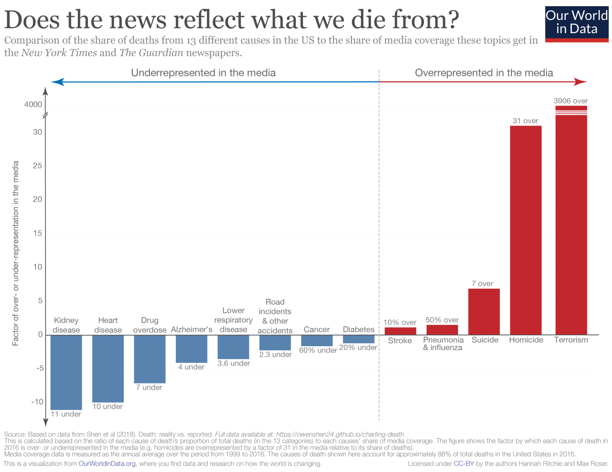

You have probably heard the adagio that “man bites dog”, and not “dog bites man”, makes for a good piece of news: unusual, exceptional, events are better stories than everyday occurrences. Hidden behind the surface, however, there is another message that seems so obvious we do not even think about it: both examples are negative events. “Dog wins the lottery” would probably be a good piece of news too, but it is not mentioned. That negative news – and possibly negative narratives in general – are more attractive than positive ones is a bit of a cliché, but it supported by much research.
An interesting case-study is false news. By definition, they do not need to describe real facts, so they can exploit our preferences in an almost unconstrained way. In a content analysis of a small sample of articles categorised as online misinformation, I found that negative articles where around five times more numerous than positive articles. It is not just about news. English-language fiction became consistently more negative in the last two centuries, and English-language song lyrics did the same in the last fifty years.
And why, yet, this should be the case? There are many possible explanations: one is that the stories we tell each other are simulations. As much as pilots can exercise their flight skills in dangerous situations safe from risks in a simulator, the pleasure we experience when we enjoy narratives would be rooted in the possibility of exercise our skills in an analogous safe environment. The next time you are in the woods you should be suspicious of the wolf.
From this perspective, it makes sense that negative events are predominant in stories: it is worst to arrive unprepared to a negative event than to a positive one. Some research has explored the idea that, in fact, not generally negative events, but threats are what narratives are about. It does not matter how realistic the threats are: you can enjoy watching The Haunting of Hill House even if you do not think ghosts exist or sharing the dubious news about a morgue employee cremated while taking a nap even if you do not usually hang out in morgues.
In a recently published paper, Olivier Morin, Oleg Sobchuk, and I, tried to explore further the threath simulation hypothesis. We found two problems with how the hypothesis is often presented. First, it leaves unspecified which kind of threats should be simulated in narratives. Second, and related, it is not clear whether it is a “theory of fictional content”, i.e. it applies specifically to fictional narratives, or to a more wide range of contents, since, as we saw before, also news tend to bend toward the negative (but also, for example, dreams have been interpreted in the same way).
In the paper, we explore a more exacting version of the hypothesis, that we called the Ordeals simulation hypothesis (mainly Olivier’s brainchild). The hypothesis specifies that neither negative events in general, nor threats in general, should be overrepresented in fiction, but ordeals. Ordeals – the meaning is different from the usage of the term in common language – are threats that are severe, rare, and reactable. ‘Reactable’ here means that we cannot prevent them (as we can do for, say, cardiovascular diseases or pathogen contamination), but they are also not completely out of our control (like being struck by lighting). Aggressions, violent social interactions and, most of all, homicides, are all examples of ordeals.
The first question is then whether ordeals are overrepresented in fiction with respect to other threats, or, to take a clear case: why do people die in novels? The ordeal simulation hypothesis predicts that agentive or accidental deaths (such as homicides or calamities), but not natural deaths, should be overrepresented. (Game of Thrones is too easy of an example, but I recently read that the currently much talked Chernobyl series may have exaggerated the number of deaths). We coded hundreds of summaries of novels in wikipedia: mortality rates of novels’ characters are disproportionally high, when compared to realistic estimates. For 100,000 adults in US, between 100 and 200 deaths are estimated every year. But, in novels, we calculated this figure as 19,000, that is, three orders of magnitude higher. The realistic rate for agentive death is only 31 over 100,000, but in novels is more than 13,000. Natural deaths are also overrepresented, but less so: in reality the rate is higher than agentive deaths (107⁄100,000), while in novels is only around 2,000. (Much more in the paper.)
The second question is whether the prominence of agentive deaths is a specific feature of fiction with respect to other kinds of content. To explore this, we used a different methodology: we performed a computer text analysis of two large, comparable, corpora, one of novels and one of private letters and diaries, to detect the frequencies of words related to death in general, and to agentive death (‘kill’, ‘murder’, ‘execution’, etc.) in particular. The ordeal simulation hypothesis would predict that the frequency of agentive death-related words would be higher in the novels than in the private documents, but no difference should be found for general death-related words. In this case, the prediction was not confirmed: mentions of death, both violent and non-violent, were about equally frequent in fictional and non-fictional material.
What can we conclude from all that? Agentive deaths are overrepresented in fiction, but they are also, so it seems, overrepresented in material written without the intention of being made public. Perhaps the ordeal simulation hypothesis is not on the right track. My opinion, however, is that the problem may lie in finding an explanation that works for, and only for, fictional material. From the psychological point of view, how different is to read a true story, a piece of news, or a novel? (agentive deaths sure are overrepresented in news, see the plot below – full study here)

How different is to write a novel, a diary entry, or a letter? Perhaps there is no specific feature that makes fictions different from other materials, besides, as suggested before when mentioning misinformation, bigger freedom of explore possible contents. Maybe developing a “theory of fiction” (that works only for fiction) is misguided. There are various elements that make narratives (fiction, diaries, news, but also scientific theories, political orientations, etc.) attractive, these elements are the legitimate objects of study, and we can apply them to various domains, fiction included.
Here the paper, and if you are really interested, all the data and codes for the analysis. The paper was published in the Cultural Evolution collection of Palgrave Communications, with many other contributions worth looking at.